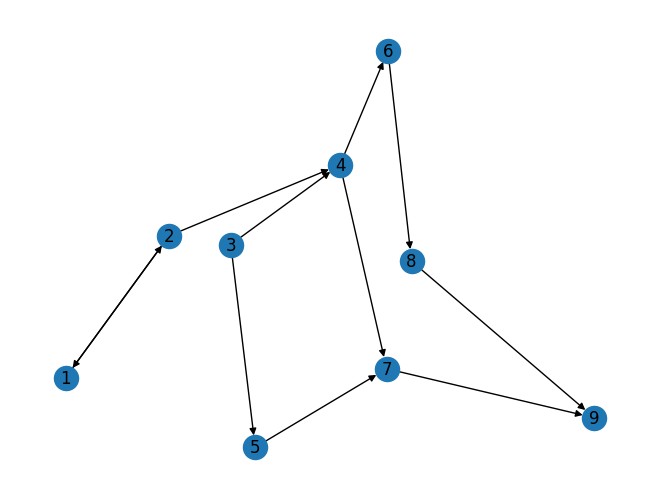

Pagerank#
import networkx as nx
G = nx.DiGraph()
# G.add_nodes_from([1, 2, 3, 4, 5, 6, 7, 8, 9])
G.add_edges_from([(1, 2), (2, 1), (2, 4), (3, 4),(3, 5), (4, 7), (4, 6), (5, 7),(6, 8), (7, 9), (8, 9)])
# nx.draw(G, with_labels=True)
nx.draw(G,with_labels=True,arrows=True)

Hitung Manual#
Rumus yang saya gunakan disini adalah: PR(A) = (1 - d) / N + d * sum(PR(j) / L(j)) dengan: n = 0,85 N = 9
PR(A) adalah nilai PageRank dari node A Item daftar
d adalah dampening factor yang biasanya diatur pada nilai 0.85 Item daftar
N adalah jumlah total node pada graph Item daftar
PR(j) adalah nilai PageRank dari setiap node Ti yang terhubung langsung ke node A Item daftar
L(j) adalah jumlah edge keluar dari setiap node Ti yang terhubung langsung ke node AItem daftar
Node 1: 1
Node 2: 2
Node 3: 2
Node 4: 3
Node 5: 1
Node 6: 1
Node 7: 1
Node 8: 1
Node 9: 0
import pandas as pdb
path = "/content/drive/MyDrive/sainsdata/tugas/Data/rank.csv"
df = pd.read_csv(path)
df
NameErrorTraceback (most recent call last)
<ipython-input-6-f2207f7f746f> in <cell line: 3>()
1 import pandas as pdb
2 path = "/content/drive/MyDrive/sainsdata/tugas/Data/rank.csv"
----> 3 df = pd.read_csv(path)
4 df
NameError: name 'pd' is not defined
Hitung menggunakan Networkx#
D = nx.pagerank(G, max_iter=25)
D
{1: 0.09027222582503139,
2: 0.11719401542664684,
4: 0.10746935352858983,
3: 0.040463907470212786,
5: 0.05766103517377121,
7: 0.13514962881969092,
6: 0.08613776543647789,
8: 0.11368180315278753,
9: 0.25197026516679155}
sorted(D,key=D.get , reverse=True)
[9, 7, 2, 8, 4, 1, 6, 5, 3]
df['iterasi 12']
0 0.001736
1 0.001736
2 0.001736
3 0.003472
4 0.002894
5 0.001157
6 0.005208
7 0.002315
8 0.010417
Name: iterasi 12, dtype: float64
Keyword terpenting dan seterusnya#
Betweenness#
db = nx.betweenness_centrality(G)
db
{1: 0.0,
2: 0.08928571428571427,
4: 0.19642857142857142,
3: 0.0,
5: 0.017857142857142856,
7: 0.08928571428571427,
6: 0.07142857142857142,
8: 0.017857142857142856,
9: 0.0}
sorted(db, key=db.get, reverse=True)
[4, 2, 7, 6, 5, 8, 1, 3, 9]
Degree#
dx = nx.degree_centrality(G)
dx
{1: 0.25,
2: 0.375,
4: 0.5,
3: 0.25,
5: 0.25,
7: 0.375,
6: 0.25,
8: 0.25,
9: 0.25}
Closeness#
dc = nx.closeness_centrality(G)
dc
{1: 0.125,
2: 0.125,
4: 0.28125,
3: 0.0,
5: 0.125,
7: 0.3472222222222222,
6: 0.25,
8: 0.2403846153846154,
9: 0.4444444444444444}